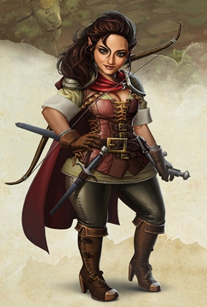

Rôdeur halfelin niv 3
Bryn Lightfingers
Rôdeur (chasseur) 3 (900 PX)
Halfelin robuste (f), neutre bon
Sauvageon (gardienne des forêts)
[ CARACTÉRISTIQUES ]
For 8 (-1) Dex 17 (+3) Con 14 (+2) Int 10 (+0) Sag 14 (+2) Cha 12 (+1)
[ MAÎTRISES ]
Bonus de maîtrise +2
Sauvegardes For +1, Dex +5
Compétences Athlétisme +1, Discrétion +5, Nature +2, Perception +4, Survie +4 (Perception passive 14)
Armes armes courantes, armes de guerre
Armures armures légères et intermédiaires, boucliers
Outils chalemie
Langues commun, halfelin, draconique
[ COMBAT ]
pv 28 ; DV 3d10
Init +3 ; Vitesse 7,50 m
CA 14 (armure de cuir 11, Dex +3)
Épée courte. Corps à corps : +5 (1d6+3 perforant ; finesse, léger)
Dague. Corps à corps : +5 (1d4+3 perforant ; finesse, légère, lancer (portée 6 m/18 m))
Arc court. Distance : +5 (1d6+3 perforant ; munition (portée 24 m/96 m), à deux mains)
[ SORTS DE RÔDEUR ]
Caractéristique d'incantation Sagesse ; DD de sauvegarde des sorts 12 ; Bonus d'attaque des sorts +4
Emplacements 3
Sorts connus (-) / 3
- Niv 1 : frappe piégeante, grande foulée, marque du chasseur
[ CAPACITÉS & TRAITS ]
Ennemi juré (elfes et kobolds)
Explorateur-né (forêt)
Style de combat (combat à deux armes)
Proie du chasseur (briseur de horde)
Sens primitifs
Chanceux (relancer un 1)
Vaillant (AV aux JdS vs effrayé)
Agilité halfeline (peut passer dans l'espace d'une créature de taille supérieure)
Résistance des robustes (avantage aux JdS contre le poison et résistance contre les dégâts de poison)
Vagabond
[ ÉQUIPEMENT ]
Épée courte, dague, arc court, armure de cuir, 20 flèches, potion de soins, sac à dos, sac de couchage, gamelle, boite d'allume-feu, torche (10), rations/1 jour (10), gourde, corde en chanvre de 15 m, piège à mâchoires, vêtements de voyage, bâton, trophée, bourse
Coût de l'équipement 155 po ; Poids de l'équipement 50.75 kg
40 po
Poids des pièces 0.4 kg
[ PERSONNAGE ]
Taille P / 91 cm / 18 kg ; Âge 22 ans (âge apparent 21)
Yeux marrons ; Peau halée ; Cheveux châtains
Trait Ma curiosité naturelle m'a fait partir de chez moi, et continue de me faire aller d'un lieu à un autre en permanence.
Idéal Il est de la responsabilité de chacun de faire en sorte que tout le groupe soit content.
Lien Ma terrible colère s'abattra un jour sur Eldreth Veluuthra (un groupe d'elfes), qui m'ont chassé de mes forêts.
Défaut J'ai un tempérament vif dans les moments de grand stress et de conflit potentiel.
Passé du personnage Très jeune, Bryn a longtemps cru que l'humain Jarstan le rôdeur était son père et que le vieux grigou d'Oswyl le druide était son oncle. Il y avait bien les oreilles pointues de la jeune fille qui trahissaient une origine étrangère, mais Bryn croyait fermement que sa mère était une elfe partie au loin. Ce n'est qu'avec le temps qu'elle prit conscience qu'elle était une halfeline. Elle eut beau demander à son père et à son oncle adoptifs des informations sur ses origines, ils ne lui révélèrent jamais rien.
Quand elle fut en âge d'apprendre un métier, son père adoptif et son oncle, qui assuraient la sécurité des communautés forestières contre les raids des kobolds, firent d'elle une rôdeuse et à ce jeu là, elle se montra très douée et toujours désireuse d'apprendre. Elle apprit à traquer ces créatures et à faire fi du nombre quand elle devait les affronter au corps à corps. Jamais elle ne faiblit et la chance fut de son côté à de nombreuses reprises quand une lame ou une flèche passaient à deux doigts de ses organes vitaux.
Quand elle eut 20 ans, elle fit la connaissance d'un groupe d'aventuriers qui s'était égaré dans la forêt et elle les sauva d'une embuscade tendue par des kobolds. Ils lui firent bon accueil et elle partagea leur quotidien pendant quelques jours. En écoutant les récits de leur exploits, il lui prit l'envie de les accompagner. Son père adoptif ne vit pas cela d'un très bon œil et son oncle la mit en garde contre la perte de temps qu'était la vie d'aventurier. Elle les écouta, acquiesça vaguement et fit son sac à la faveur de la nuit. Elle resta avec le petit groupe pendant plus d'une année, ses talent de rôdeuse s'avérant très utiles dans les terres sauvages. Elle visita deux grandes villes mais les trouva laides et bruyantes. Mais il y a quelques mois, le groupe eut la très mauvaise idée de s'attaquer à un jeune dragon noir qui s'en prenait à une modeste communauté. Le groupe fut décimé et Bryn n'eut la vie sauve que parce qu'une fois de plus la chance était de son côté. Elle mis plusieurs semaines à guérir de ses blessures et à faire le deuil de ses compagnons.
Alors qu'elle se reposait dans un petit village perdu au cœur des collines, elle eut vent d'incidents graves survenus dans sa forêt natale. Son sang ne fit qu'un tour ! Elle empoigna son baluchon et s'y dirigea taraudée par de sombres pressentiments. Elle y trouva deux tombes : celle de son père adoptif et celle de son vieil oncle. Tous deux avaient perdu la vie en s'opposant à un clan d'elfes mercenaires qui travaillent pour le compte d'un consortium de magiciens malfaisants. Elle jura vengeance sur la tombe de ceux qui l'avaient élevée et qu'elle avait abandonnés pour courir l'aventure.
Un jour les mercenaires elfes tomberont tous sous ses coups, du plus humble fantassin au chef le plus réputé. Bryn est tenace et a repris à son compte la devise de son vieil oncle : « le bœuf est lent, mais la terre patiente ».
Stat de WotC, histoire de Kuroda